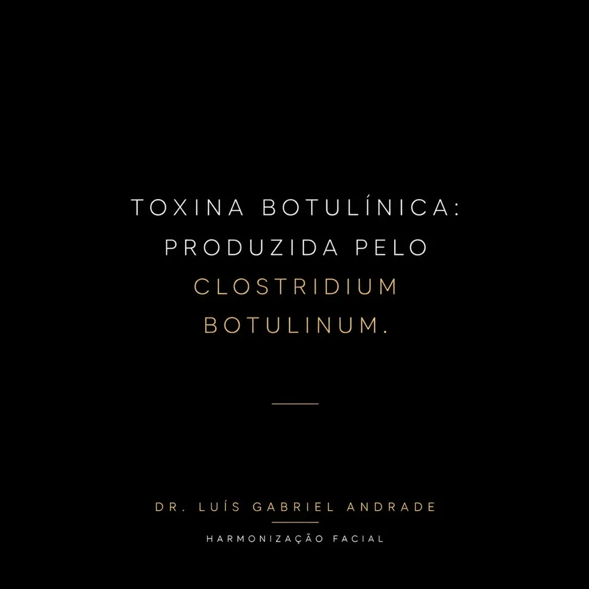
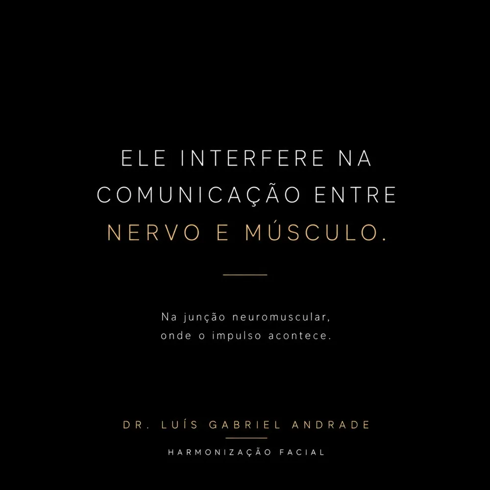
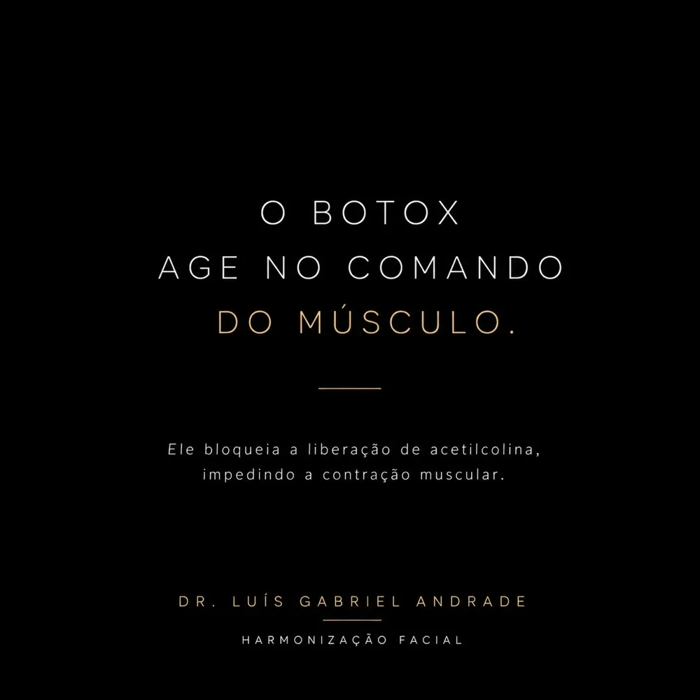
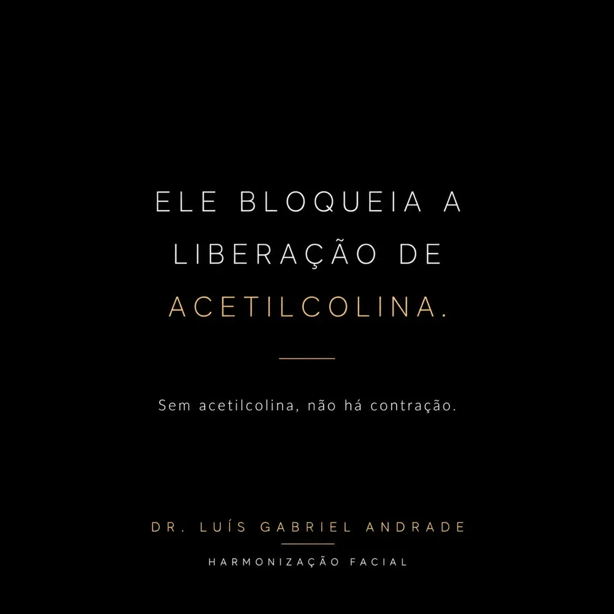
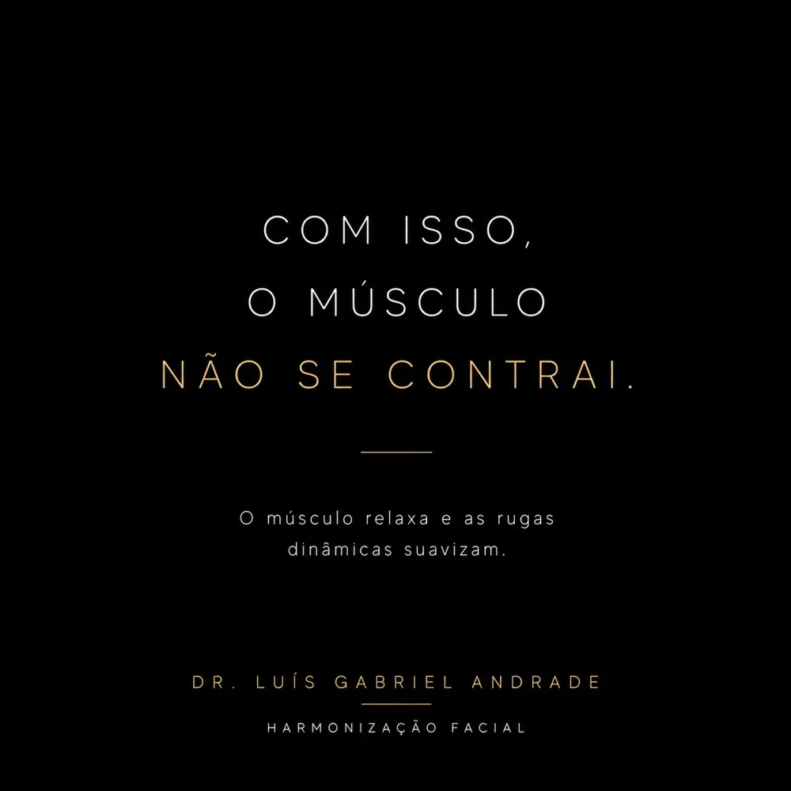
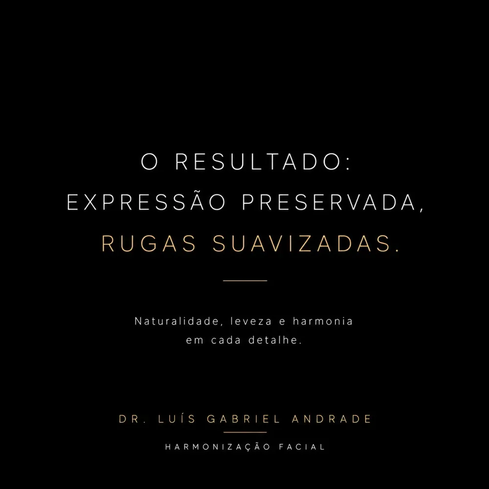
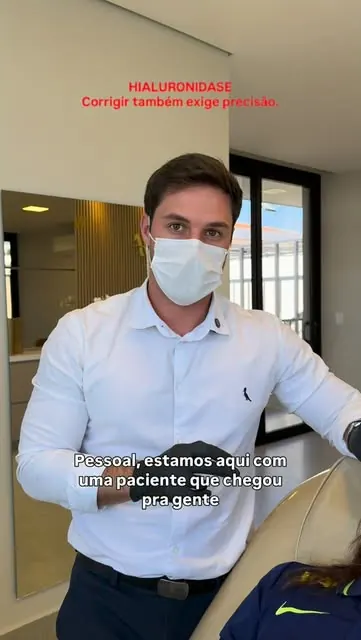

01
Harmonização facial
Procedimentos que buscam equilíbrio entre as proporções do rosto, como o uso de ácido hialurônico em lábios, mento e contorno.
VER CASOS →Naturalidade em cada detalhe.
Harmonização facial e otomodelação com técnica, precisão e atenção à individualidade de cada rosto.
ALFENAS · POÇOS DE CALDAS · ILICÍNEA · CARMO DA CACHOEIRA
Aqui, o objetivo não é mudar. É reequilibrar.
Atua em harmonização facial e otomodelação no Sul de Minas. Cada tratamento parte de uma avaliação individual e de um planejamento pensado para respeitar os traços e a expressão de cada pessoa.
A indicação de cada procedimento é definida somente após avaliação individual.
Procedimentos que buscam equilíbrio entre as proporções do rosto, como o uso de ácido hialurônico em lábios, mento e contorno.
VER CASOS →Atua na comunicação entre nervo e músculo para suavizar rugas dinâmicas, buscando preservar a expressão.
VER CASOS →Ajustes no contorno do nariz sem cortes. A viabilidade é analisada caso a caso, na avaliação.
VER CASOS →Procedimento voltado ao contorno e à projeção das orelhas. A indicação depende de avaliação individual.
VER CASOS →Imagens publicadas pelo profissional. Resultados variam de pessoa para pessoa e dependem de avaliação individual.
Arraste a linha sobre a foto para comparar o antes e o depois.
Você entra em contato para tirar dúvidas e combinar um horário.
Uma conversa sobre seus objetivos e uma análise das características do seu rosto.
Definição conjunta do que é indicado para o seu caso, com clareza sobre cada etapa.







VÍDEO · HIALURONIDASE Corrigir também exige precisão.Escolha a cidade e fale direto pelo WhatsApp para consultar datas.
O primeiro passo é uma conversa sobre o que você busca.
+55 35 99826-2230